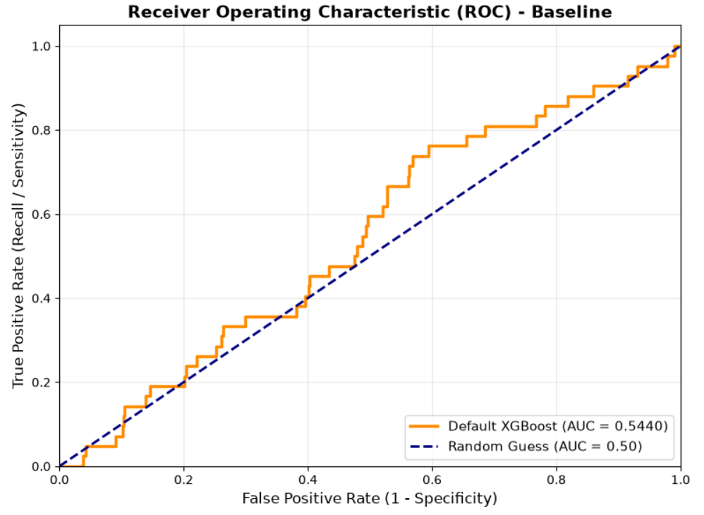
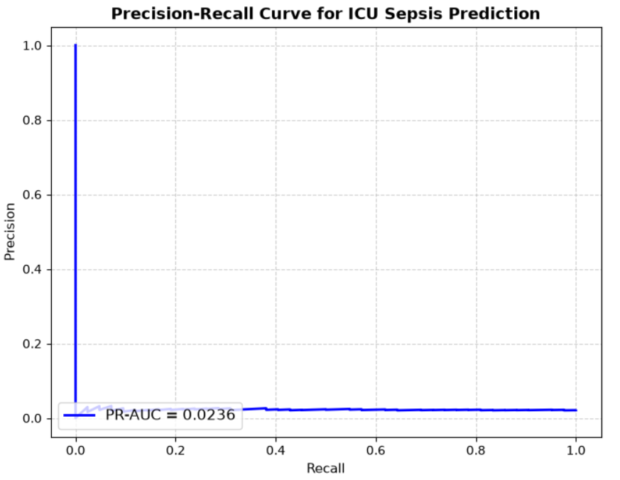
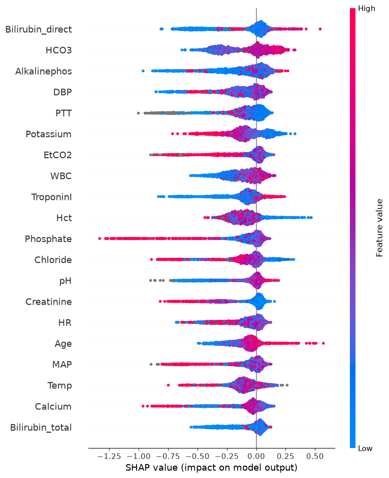

This project is contained in 'sepsis.ipynb'.
Dataset
This project utilizes a Sepsis Prediction Dataset from Kaggle.
This dataset contains 10,000 synthetic patient observations that resemble real ICU electronic health record (EHR) data. There are 44 features, including patient demographics, vital signs, laboratory results, and sepsis outcome.
I chose this dataset because it is a simple dataset (no time series data), but includes a comprehensive panel of tests.
Below is a summary of the data:
Dataset Shape: 10000 rows, 44 columns
--- Column Types & Data Summary ---
RangeIndex: 10000 entries, 0 to 9999
Data columns (total 44 columns):
# Column Non-Null Count Dtype
--- ------ -------------- -----
0 Unnamed: 0 9313 non-null float64
1 Hour 9305 non-null float64
2 HR 9275 non-null float64
3 O2Sat 9313 non-null float64
4 Temp 9321 non-null float64
5 SBP 9283 non-null float64
6 MAP 9339 non-null float64
7 DBP 9324 non-null float64
8 Resp 9290 non-null float64
9 EtCO2 9329 non-null float64
10 BaseExcess 9281 non-null float64
11 HCO3 9285 non-null float64
12 FiO2 9272 non-null float64
13 pH 9279 non-null float64
14 PaCO2 9290 non-null float64
15 SaO2 9315 non-null float64
16 AST 9295 non-null float64
17 BUN 9333 non-null float64
18 Alkalinephos 9307 non-null float64
19 Calcium 9336 non-null float64
20 Chloride 9291 non-null float64
21 Creatinine 9274 non-null float64
22 Bilirubin_direct 9296 non-null float64
23 Glucose 9323 non-null float64
24 Lactate 9249 non-null float64
25 Magnesium 9277 non-null float64
26 Phosphate 9265 non-null float64
27 Potassium 9294 non-null float64
28 Bilirubin_total 9319 non-null float64
29 TroponinI 9313 non-null float64
30 Hct 9340 non-null float64
31 Hgb 9285 non-null float64
32 PTT 9325 non-null float64
33 WBC 9321 non-null float64
34 Fibrinogen 9269 non-null float64
35 Platelets 9310 non-null float64
36 Age 9312 non-null float64
37 Gender 9301 non-null float64
38 Unit1 9305 non-null float64
39 Unit2 9287 non-null float64
40 HospAdmTime 9314 non-null float64
41 ICULOS 9319 non-null float64
42 SepsisLabel 10000 non-null int64
43 Patient_ID 10000 non-null int64
Data Cleaning
First, we can remove columns that we don't want the model to learn. We removed Unnamed: 0 (an irrelevant index), Hour (timestamp of ICU observation), Unit1 (ICU unit indicator), Unit2 (ICU unit indicator), HospAdmTime (time from hospital admission), Patient_ID, and ICULOS (ICU length of stay).
The rest of the columns are patient demographics, vitals, blood tests, and other lab results.
Finally, we take the SepsisLabel column and make it our target (y_cleaned), and we make the remaining 36 columns our features (X_cleaned).
Native XGBoost Baseline
We use the default XGBoost hyperparameters to train a baseline model. Since the dataset is highly imbalanced, we use stratify when splitting the training and testing data to ensure the same proportion of sepsis and non-sepsis patients in both sets. The model is marking all cases as not sepsis and still achieving an accuracy of about 98%. This is because there are only 42 sepsis cases out of 2000 patients in the test set. ROC-AUC (area under the curve of true positive to false positive) is ~0.54, which is just about as good as random guessing. PR-AUC (precision to recall area under the curve) was ~0.02.

Handling Class Imbalance
scale_pos_weight
To force XGBoost to pay attention to the sepsis cases, we use the scale_pos_weight parameter. This tells the model to heavily penalize false negatives (missing a sepsis patient) proportional to the class imbalance ratio, which was about 46.6. This meant missing a positive sepsis case was penalized about 46 times more heavily than a false positive. However, the model still predicted all negatives.
Lower decision threshold
Because sepsis is so rare, the probabilities predicted by the model are still very low. When we check what the predicted probabilities are for positive cases, they are all under 5%. When forced to use a rigid 0.5 threshold, anything under 50% confidence was rounded down to zero. Let's lower the decision threshold.

We can automatically find the optimal decision threshold that maximizes the f1-score for the imbalanced test set. The f1-score is a metric between 0 and 1 that is higher when precision and recall are balanced, and lower when either precision or recall is low.
The decision threshold that maximizes the f1-score is 0.00232, and using this threshold, our recall increases to 0.38 and our precision becomes 0.03. This means that we're catching 38% of sepsis cases, but only 3% of the "positive alarms" are actually sepsis. So we are still getting a lot fo false alarms.
Hyperparameter Tuning
To learn more complex interactions, we train a deeper model and add more trees. We use the following hyperparameters:
deeper_model = XGBClassifier(
scale_pos_weight=scale_weight,
max_depth=5, # deeper to learn more complex interactions
learning_rate=0.04,
n_estimators=200, # More trees to refine predictions
subsample=0.7, # Row subsampling to reduce overfitting
colsample_bytree=0.7, # Feature subsampling per tree
random_state=42,
eval_metric='logloss'
)I got a maximum recall of 0.81 using these settings, and precision hovered around 0.02-0.04. While this is still a lot of false positives, it is a huge improvement over the baseline model. The ROC-AUC is now ~0.56 and the PR-AUC is ~0.02. The decision threshold that maximizes the f1-score is ~0.097, which is much higher than the baseline model's threshold of 0.00232. This means that the model is more confident in its predictions.
Missingness Indicators
In clinical data, missing values are almost never "missing at random." The fact that a test was not ordered can be just as clinically informative as the test result itself. Routine vitals (heart rate, blood pressure) are monitored continuously, but expensive or invasive lab panels (like arterial blood gases, lactate, cardiac enzymes, or specific cultures) are ordered reactively.
To see if we can use this information, we create missingness indicator columns for the following non-routine tests: 'Lactate', 'Creatinine', 'BUN', 'AST', 'Alkalinephos', 'Bilirubin_total', 'pH', 'PaCO2', 'BaseExcess', 'HCO3', 'Platelets', 'PTT', 'Fibrinogen', 'WBC', 'TroponinI'. The new column corresponding to each feature has a 0 if the measurement is present and a 1 if the measurement is missing.
After training the model again, we find that these additional indicator columns do not change the results much, which demonstrates that XGBoost natively handles missing values well in this case.
Interpreting Results with SHAP
The SHAP bee swarm plot is one of the most powerful visualizations in machine learning. The features are ordered from most to least impactful from top to bottom. Data points to the right of the center line represent patients in which a feature pushes the model's prediction toward sepsis (Class 1). Dots to the left of the center line represent patients in which a feature pushes the model's prediction away from sepsis (toward healthy / Class 0). Red dots represent high values for a feature and blue dots represent low values for a feature. Gray dots indicate missing values.

To comment on just a few of the results:
- Sepsis can lead to high direct bilirubin because the inflammation that occurs during sepsis can interfere with the liver's ability to transfer bilirubin into bile, so it remains in the bloodstream.
- Here, higher HCO3 level leads to a more likely sepsis diagnosis. Interestingly, low levels of HCO3 are usually associated with sepsis, but there are mechanisms by which HCO3 can be high during sepsis. This paper found a U-shaped relationship between blood HCO3 and sepsis mortality.
- Sepsis more commonly causes higher alkaline phosphatase (alkalinephos), which is related to the liver's inability to move bile, but not always.
- Sepsis can cause low diastolic blood pressure (DBP), but interestingly, both high and low DBP is influencing toward not sepsis here.
- Low potassium and EtCO2 are commonly associated with sepsis.
- Troponin is elevated during cardiac stress.
- Elevated PTT (time it takes for blood to form a clot) is usually associated with sepsis, but here, high PTT is influencing toward non sepsis. It is possible that PTT can actually be lower during early stages of sepsis, but it would be more likely that higher PTT would influence toward sepsis.
- Sepsis is usually associated with high creatinine, corresponding with decreasing kidney function, but that is the opposite of what is happeneing here.
Conclusion
In a real world scenario, an alarm system that caught 81% of sepsis cases would not be worth implementing with such a low precision rate (3%). There would be 33 false alarms for every true sepsis case caught.
By using SHAP to interpret this XGBoost model, we also find that this synthetic dataset does not match the real effects of sepsis, and some clinical results lead the model opposite of the expected direction. For the next project, I will use a real dataset.